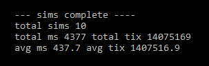

Mutable Game Design
In this article, a mutable gameloop is presented as a C# console application.
We discuss how the application runs and handles global mutable program state.
First, let's look at two examples of mutable game design to prove it's possible.
Mutable Game Design Examples

public repo: https://github.com/MrGrak/SMWW

public repo: https://github.com/MrGrak/TSK
Console Gameloop Example 1
Now, let's discuss a simple, but important gameloop example.This gameloop is at the heart of both the examples presented above.
First, the code for the gameloop is presented.
Then, the code is modified to be timed and tested.
Console Gameloop 1.
Console Gameloop 1 Timed.
Explanation of Code
In this console app example, we create an Actor class that has an X, Y position,and an active boolean. this is all we need to model an actor in our simulation, a
X and Y position and a boolean to tell the system this actor is 'alive' or 'dead'.
Then we create a Pool class, which only has a list of Actors. We will use this list
of Actors to represent all the actors in the game simulation. To update the game,
we will iterate / loop over this list of actors, modifying their values.
Then we create the Simulation Class, which will handle all responsibilities for
the game simulation, including updating the actors via the Pool object created above.
The Simulation class contains the goal position, and a counter to track how many
actors are active / remaining in the simulation. Active actors are processed by
Simulation.Run().
Sim.Run() first calls the Setup() method, to ensure the Simulation is in a proper
state before starting. Setup() makes all actors active, and places them in a manner
so they dont overlap. Setup() also resets the activeActors counter. Once Setup()
completes, we begin the work of the simulation. First, we establish the exit condition.
If there are 1 or less active actors, then we end the Simulation. If that evaluates
to false, then we continue to the next step - checking to see if the actor is active.
If we have an active actor, we then move the actor towards the goal position per axis.
After the move phase of work has completed, then we do the collision checking work.
This is done simply by comparing the actor's position (X,Y) to all other actor positions.
If two actors occupy the same position, then they are overlapping / colliding, and the
actor we are checking is set to be inactive. When an actor becomes inactive, they
no longer move or are collision checked by the simulation, essentially making the actor
dead. Once enough actors have 'died' from collisions, the simulation ends.
In ConsoleGameloop1, we output the number of active actors to the console, to
see if the simulation is working as designed.
In ConsoleGameloop1Timed, we average how long Simulation.Run() takes to run
many times. We output these values to the console, along with the averages.
Below is the console output of ConsoleGameloop1Timed:

Why is this Gameloop Example Important?
It demonstrates pools, and adding and removing pool objects (quickly and easily).It demonstrates a basic move phase, where each pool object's positions are calculated.
It demonstrates a basic collision phase, where active object's positions are compared
to all other active objects. It shows that the gameloop is deterministic, and efficient.
In other words, this gameloop serves as a simple, but 'correct' example of how to do
a mutable gameloop on a single thread. In the next article, it will be multithreaded.